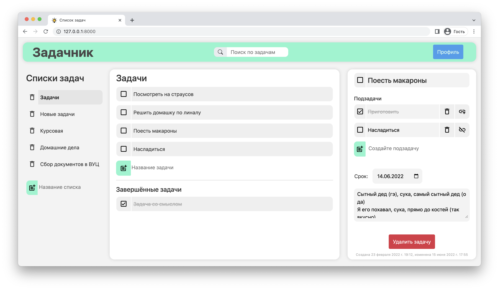
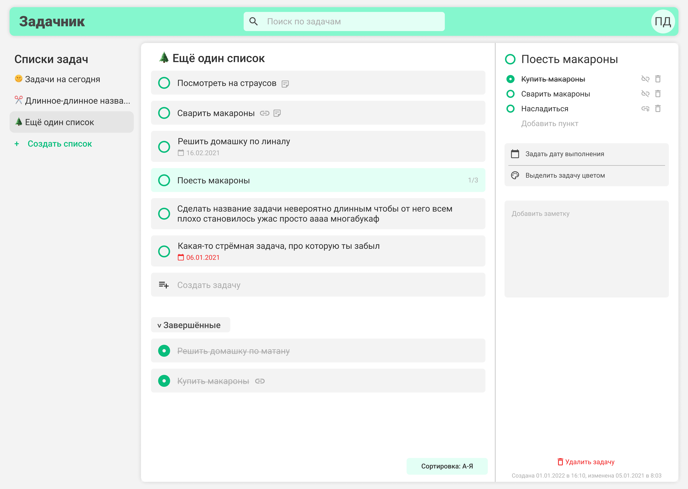
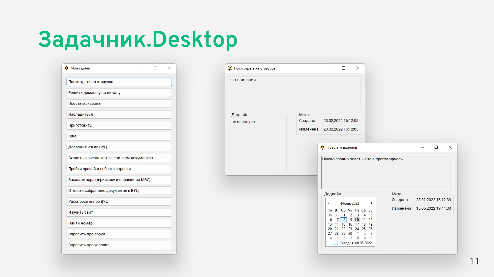

Нет, на самом деле я обманываю. Первые заготовки появились в конце января, а бекенд (за небольшими исключениями) был полностью написан, как сейчас помню, 23 февраля (за день до войны, да) и немного дописан 24-го. Потом было тихо. В апреле Илья сделал кусок интерфейса за один или два дня. И снова тишина. И наконец, за два дня до защиты, я дописал остатки фронтенда и натянул их на бэкенд. И получилось что получилось. Но по факту на всю работу было и правда затрачено около 7 человеко-дней.
Началось всё скучно: мы выбрали тему с созданием программы управления каким-то роботом. Писать предстояло на питоне. Но в очередной раз ввели карантин и мы под шумок предложили научнику сменить тему на более независимую от физического мира. А то пришлось бы в институт только ради рандеву с роботом ездить. Фу. В итоге остановились на таск-трекере. Правда преподаватель сказал, что нужно будет помимо приложения на питоне сделать «виджет рабочего стола» на шарпе. Типа «ладно уж, резвитесь со своим питоном, на и с шарпом тогда тоже поиграйте, раз уж мы на уступки пошли». «Ладно», — сказали довольные мы.
Я начал с макета, постепенно рисовал его на протяжении пары дней и по итогу получилось довольно недурно. Даже спустя пол годя я не разочаровался в этом дизайне. Правида, по итогу макет так и остался макетом, а работа выполнялась максимально быстро, поэтому ни о каком идеальном переносе интерфейса речи не шло. 
Из технических деталей, пожалуй, даже нечего выделить. Это простейший сайт на Django, сдобренный JS и CSS. Тот самый обязательный кусок на шарпе вообще был написан за полтора дня в стиле «лишь бы отцепились»: получился самый тупой просмотрщик базы данных. Причем даже обновление БД он не поддерживает, а читает её всего раз при запуске. В целом, тактика оправдала себя, и я даже не уверен, что кто-то его запускал для проверки — скорее всего, удовлетворились скриншотами. 
Вообще, приложение по итогу мне понравилось. В нём много чего не хватает для настоящего запуска (мы же в 2022, нужны как минимум синхронизация и мобильная версия), но, если бы сейчас был 2010 год, думаю, оно уже могло бы стать самостоятельным продуктом.
После того, как написал весь этот текст, задумался, зачем вообще его написал. Наверное, просто чтобы немного порефлексировать и сохранить воспоминания себе на будущее. Так что, если ты, путник, случайно забрел сюда и не понял, на что потратил своё время, — знай: ни на что.